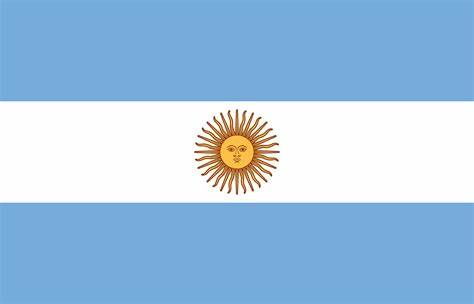

About Me
My full name is Santiago Benjamín Irigoyen and i go by Santiago. I was born in South america and live with my family in Argentina. I'm currently studing in BYU Idaho online and going to a local university at the same time. I love reading, games and having pilosophycal conversations.

Argentina, Misiones
Argentina, officially the Argentine Republic, is a sovereign country in South America, located in the extreme south and southeast of the subcontinent. The Province of Misiones is one of the twenty-three provinces of the Argentine Republic, one of the twenty-four self-governing states or first-order jurisdictions that make up the country, and one of the twenty-four national legislative electoral districts.
Web Dev Resources
[Your content for Card 2 goes here. Include at least three
resource links.]
[Link Text 1]
[Link Text 2]
[Link Text 3]